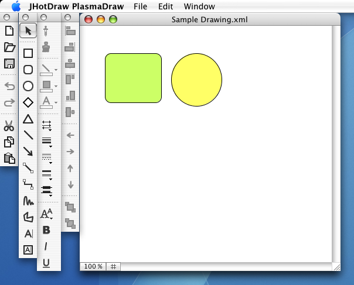
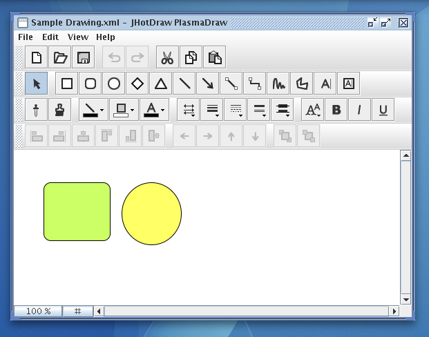
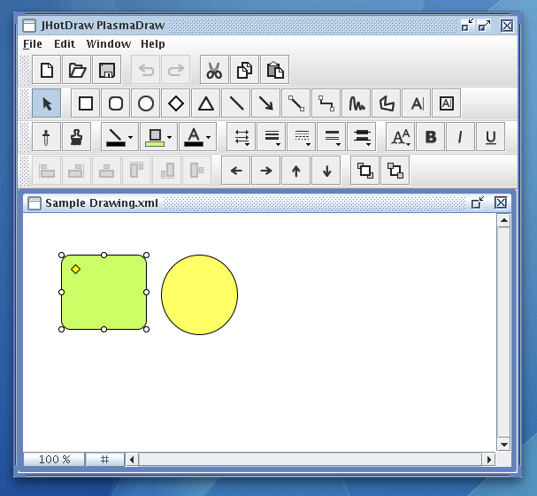

Draw is a sophisticated example of a general purpose drawing editor. Draw consists of some very simple Figures, such as RectangleFigure and EllipseFigure, as well as complex ones like TextFigure and BezierFigure.
The Draw sample application can be found in the lib directory.
The following screenshots show Draw running different document interfaces:
Draw running with the OSX document interface:

Draw running with the Single Document Interface (SDI):

Draw running with the Multi Document Interface (MDI):
